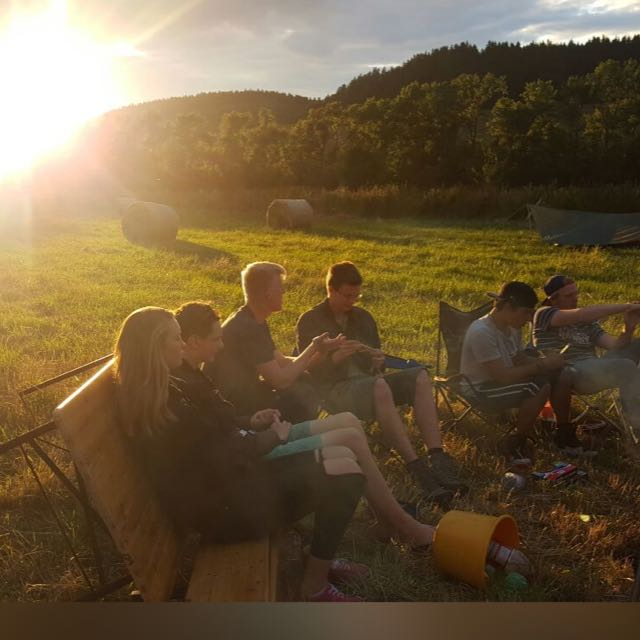

Wat is echte vriendschap?
Wat houdt echte vriendschap in?

Tegenwoordig bestaat de neiging om al je kennissen 'vrienden’ te noemen, vermoedelijk door het gemak waarmee in digitale sociale netwerken ieder vluchtig, min of meer vriendschappelijk contact reeds als vriendschap wordt beschouwd.
Als je niet zoals echte vrienden dat plegen te doen geregeld met elkaar optrekt of samen bent, kun je dan wel van vriendschap spreken? Zie je elkaar slechts enkele keren per jaar, dan krijg je niet de kans om die zeldzaam onbaatzuchtige vertrouwensband op te bouwen die zo typerend is voor echte hartsvrienden en hartsvriendinnen. Je bent dan eerder kennissen van elkaar dan ware vrienden, ook al is er sprake van gezelligheid en een gevoel van saamhorigheid.
Wat zijn de kenmerken van echte vriendschap?
Ware vrienden kun je herkennen aan de volgende eigenschappen:
- de neiging om datgene te doen wat het beste is voor de ander.
- sympathie en empathie.
- eerlijkheid, ook in situaties waarin het voor anderen moeilijk kan zijn om de waarheid te spreken of te horen.
- wederzijds begrip en medeleven; de mogelijkheid van contact voor emotionele steun.
- genieten van elkaars gezelschap.
- vertrouwen in elkaar.
- positieve wederkerigheid: een gelijkwaardig geven en nemen tussen de twee partijen.
- de mogelijkheid om jezelf te zijn, je eigen gevoelens te uiten en fouten en vergissingen te durven maken zonder bang te zijn dat je daarvoor wordt veroordeeld.
Van ‘echte vriendschap’ is sprake als je elkaar als ‘goede vriend, boezemvriend(in) of hartsvriend(in) of zelfs beste vriend beschouwt. Overigens, sommige mensen hanteren de term ‘beste vriend’ eerder voor een categorie goede vrienden, dan voor de vriend met wie zij de meeste affiniteit voelen.
Hoe weet je dat je elkaars goede vriend bent?
Wie bel jij op of naar wie ga jij toe als je een fijne ervaring of juist verdrietige ervaring wilt delen? En wie belt jou op of komt naar jou toe als hij of zij een fijne ervaring of juist verdrietige ervaring wil delen? Als je antwoord op beide vragen dezelfde namen van personen bevat, weet je met wie jij echte vrienden bent.
Kan de vriendschap ook van één kant komen? Ook bij een hartsvriend?
Het komt weleens voor dat je weet dat je altijd bij iemand terecht kunt, maar dat die persoon niet snel naar jou zou toekomen. Of, omgekeerd, je staat altijd voor iemand klaar, maar zelf zou je niet zo gauw met een blij of verdrietig verhaal naar die persoon gaan.
Is dat een vorm van eenzijdige vriendschap? In eerste instantie lijkt het daarop, maar dat hoeft niet het geval te zijn. Denk bijvoorbeeld aan twee boezemvrienden van wie de een ging huwen of samenwonen en sindsdien eerder geneigd is de belangrijke dingen in zijn leven met zijn partner te delen dan met zijn boezemvriend. Vaak is dat het soort vriend bij wie je later weer je hart wilt uitstorten als je relatie onder druk staat of verbroken is. Zo’n vriend noem je je hartsvriend of hartsvriendin of je ‘beste vriend’, maar in elk geval is het een ware vriend.